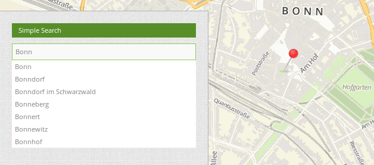
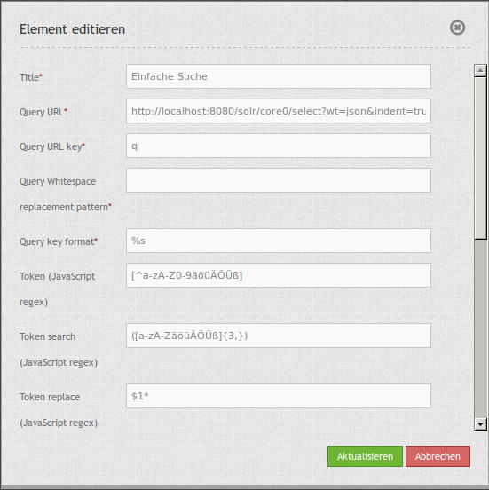
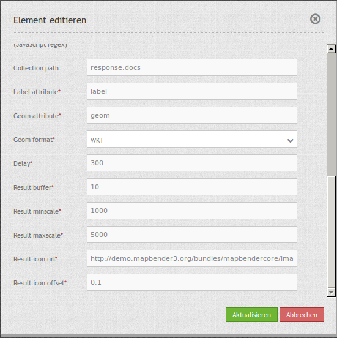

SimpleSearch¶
SimpleSearch bietet eine Einfeldsuche oder Schlagwortsuche. Die Suchanfrage erfolgt dabei an einen Suchdienst z.B. Solr. Es wird ein Eingabefeld angeboten, welches direkt in die Toolbar oder in der Seitenleiste (Sidepane) eingebunden werden kann. SimpleSearch sendet den eingegebenen Suchbegriff an eine konfigurierbare URL und empfängt JSON-formatierte Daten, welche eine Beschriftung und Geometrieattribute für jeden Eintrag beinhalten.
Die Geometriedaten können in WKT oder in GeoJSON-Format codiert werden.
{kind=link}
Konfiguration¶
 {kind=link}
{kind=link}
- Title: Titel des Elements. Dieser wird in der Layouts Liste angezeigt und ermöglicht, mehrere Button-Elemente voneinander zu unterscheiden. Der Titel wird außerdem neben dem Button angezeigt, wenn “Beschriftung anzeigen” aktiviert ist.
- Query URL: Solr URL, an die der eingegebene Suchbegriff gesendet wird (z.B.
http://localhost:8080/solr/core0/select?wt=json&indent=true). - Query URL key: Der Suchparameterschlüssel, der angehängt wird (z.B.
q). - Query Whitespace replacement pattern: Muster zum Austausch von Leerzeichen.
- Query key format: Einfaches Suchformat (z.B.
%s). - Token search/ replace (JavaScript regex): Tokenizer spaltet/ sucht/ ersetzt regexp.
- Token, z.B.:
[^a-zA-Z0-9äöüÄÖÜß] - Token search, z.B.:
([a-zA-ZäöüÄÖÜß]{3,}) - Token replace, z.B.:
$1*
- Token, z.B.:
- Collection path: Dies kann ein Attributspfad sein, der vom Abfrageergebnis extrahiert wird (z.B.
response.docs). - Label attribut: Attributname der zur Beschriftung genutzt wird (z.B.
label). - Geom attribut: Attributname der Geodaten (z.B.
geom). - Geom format: Geodatenformat, kann WKT oder GeoJSON sein (z.B.
WKT). - Delay: Automatische Vervollständigungs-Verzögerung (z.B.
300). - Result buffer: Puffert das Objekt (in Karteneinheiten) vor dem Zoomen (z.B.
10). - Result minscale/ maxscale: Maßstabsbegrenzung beim Zoomen (z.B.
1000und5000). ~ wenn keine Begrenzung gewünscht wird. - Result icon url: Symbol, das zur Trefferanzeige verwendet werden soll (z.B.
http://demo.mapbender3.org/bundles/mapbendercore/image/pin_red.png). - Result icon offset: Versatz x und y des Symbols (z.B.
-6,-38für das Stecknadel-Icon).
YAML-Definition¶
query_url: http://example.com/solr/core/0/select?wt=json&indent=true&rows=8 # Solr URL (z.B. ``http://localhost:8080/solr/core0/select?wt=json&indent=true``).
query_key: q # Der Suchparameterschlüssel, der angehängt wird
query_ws_replace: # Pattern zum Austausch von Leerzeichen.
query_format: '%s' # Einfaches Suchformat.
token_regex: [^a-zA-Z0-9äöüÄÖÜß] # Tokenizer split regexp.
token_regex_in: ([a-zA-ZäöüÄÖÜß]{3,}) # Tokenizer search regexp.
token_regex_out: '$1*' # Tokenizer replace regexp.
collection_path: response.docs # Es kann ein Attributspfad sein, der vom Abfrageergebnis extrahiert wird.
label_attribute: label # Attributname, der für die Trefferausgabe genutzt wird
geom_attribute: geom # Name des Attributs der Geometriedaten
geom_format: WKT # Geodatenformat, kann WKT oder GeoJSON sein
delay: 300 # Automatische Vervollständigungs-Verzögerung. 0
result_buffer: 50 # Puffert den Treffer in Karteneinheiten vor dem Zoomen
result_minscale: 1000 # Maßstabsbegrenzung beim Zoomen, ~ für keine Begrenzung
result_maxscale: 5000
result_icon_url: http://demo.mapbender3.org/bundles/mapbendercore/image/pin_red.png # Marker, der zur Trefferanzeige verwendet werden soll
result_icon_offset: -6,-38 # Versatz x und y des Symbols
So richten Sie Solr ein:¶
Installation¶
Laden Sie Apache Solr herunter und entpacken Sie es in einen beliebigen Ordner. Nach dem erfolgreichen Entpacken der Datei kann Solr durch den Aufruf von solr/bin/install_solr_service.sh als Service in einem Linux-System installiert werden.
- Download: http://lucene.apache.org/solr/
- Dokumentation: http://lucene.apache.org/solr/resources.html#documentation
- Quickstart: http://lucene.apache.org/solr/quickstart.html
Installation von Apache Solr über das Terminal im data-Verzeichnis:
cd /data
wget http://apache.lauf-forum.at/lucene/solr/5.4.1/solr-5.4.1.tgz
tar -zxvf solr-5.4.1.tgz
cd solr-5.4.1/
Apache Solr läuft auf Java 7 oder höher, Java 8 ist kompatibel und kann einige Performance-Verbesserungen bringen. Bei der Verwendung von Oracle Java 7 oder 7 OpenJDK sollten Sie sich sicher sein, dass Sie die GA 147 oder Update-Versionen U40, U45 und U51 nicht verwenden. Wir empfehlen u55 oder höher zu verwenden.
Start und Stopp¶
Sie können durch die folgende Befehle Solr über das Terminal starten und stoppen:
- Start Solr:
/data/solr-5.4.1/bin/solr start -s /data/solr-5.4.1/server/solr
- Solr Stop:
/data/solr-5.4.1/bin/solr stop -all
- Solr-Administrationsseite:
- für die Verwaltung der Cores
- http://localhost:8983/solr
Solr-Core¶
Der Solr-Home Ordner ist der Bereich, in dem sich die verschiedenen Solr-Kerne für die Suche befinden. Die Minimalkonfiguration wird in folgender Datei vorgenommen:
Datei: solr-5.4.1/server/solr/solr.xml
Tragen Sie den folgenden XML-Block in die Datei ein:
<?xml version="1.0" encoding="UTF-8" ?>
<solr></solr>
Die solr.xml identifiziert das Verzeichniss als Solr-Ordner mit den Cores. Hier können auch die eigenen Solr-Cores abgelegt werden. Da wir jedoch unabhängig von der Solr-Version arbeiten wollen legen wir uns im folgenden ein separates Verzeichniss mit den Kernen an. Falls Sie diesen Schritt nicht durchführen wollen, dann führen Sie die folgende Anleitung in dem Verzeichnis solr-5.4.1/server/solr/ durch.
Eigener Solr-Core¶
Für die Anlage eigener Kerne erstellen Sie einen Ordner unter /data/solr_data und kopieren Sie die solr.yml aus dem Verzeichnis /data/solr-5.4.1/server/solr in dieses Verzeichnis (/data/solr_data/solr.yml). Dann erstellen Sie einen neuen Ordner für ihren Kerne. Im Folgenden wurde der Core places unter /data/solr_data/places genutzt.
Jeder Core besteht aus drei unentbehrlichen Konfigurationsdateien:
- core.properties
- Durch die core.properties wird der Core von Solr als Kern erkannt
- solrconfig.xml
- Die solrconfig.xml beschreibt den Funktionsumfang den dieser Kern mit sich bringt
- schema.xml
- Die schema.xml beschreibt den Aufbau des Index
Kopieren Sie sich die Konfigurationsdateien aus dem Verzeichniss /data/solr-5.4.1/server/solr/configsets/basic_configs in das Verzeichniss des Cores unter /data/solr_data/places oder legen Sie diese neu an mit den folgenden Inhalten:
- core.properties
- ablegen unter /data/solr_data/places/core.properties
- Anpassung der core.properties:
- Fügen Sie hier den folgenden Konfigurations-Block ein:
name=places
shard=${shard:}
collection=${collection:places}
config=${solrconfig:solrconfig.xml}
schema=${schema:schema.xml}
coreNodeName=${coreNodeName:}
- solrconfig.xml
- ablegen unter /data/solr_data/places/conf/solrconfig.xml
- Anpassung der solrconfig.xml:
- Fügen Sie hier den folgenden YML-Block ein:
<?xml version="1.0" encoding="UTF-8"?>
<config>
<luceneMatchVersion>5.4.0</luceneMatchVersion>
<dataDir>${solr.data.dir:}</dataDir>
<schemaFactory class="ClassicIndexSchemaFactory" />
<!-- RequestHandler zum abfragen des Index -->
<requestHandler name="/select" class="solr.SearchHandler" />
<!-- RequestHandler zum indizieren von Daten -->
<requestHandler name="/update" class="solr.UpdateRequestHandler" />
</config>
- schema.xml
- ablegen unter /data/solr_data/places/conf/schema.xml
- Anpassung der schema.xml:
- Fügen Sie hier den folgenden YAML-Block ein:
<?xml version="1.0" encoding="UTF-8" ?>
<schema name="places" version="1.5">
<!-- FIELDS -->
<field indexed="true" multiValued="false" name="id" required="true" stored="true" type="string"/>
<field indexed="true" multiValued="false" name="text" required="true" stored="true" type="string"/>
<uniqueKey>id</uniqueKey>
<!-- FIELD TYPES -->
<fieldType class="solr.StrField" name="string" sortMissingLast="true"/>
</schema>
Falls Sie bestimmte Wörter als Stopwords markieren wollen, dann können Sie diese als Liste in einer Datei unter /data/solr_data/places/conf/stopwords.txt speichern. Sinnvoll sind hier Worter wie z.B.: als, auf, im, in usw.
Nun können Sie Solr mit den eigenen Kernen neustarten. Nutzen Sie dazu den obigen Befehl zum Stoppen und dann den folgenden angepassten Befehl mit dem neuen Core-Verzeichnis:
- Start Solr:
/data/solr-5.4.1/bin/solr start -s /data/solr_data
Solr example¶
Das Verzeichnis /solr-5.4.1/example enthält Beispiele für Solr. Jedes Beispiel ist in einem seperaten Verzeichnis abgelegt. Um ein bestimmtes Beispiel auszuführen, geben Sie den folgenden Befehl im Terminal ein:
bin/solr -e <EXAMPLE> where <EXAMPLE> is one of:
cloud : SolrCloud Beispiel
dih : Datenimport Handler (rdbms, mail, rss, tika)
schemaless : Schemaloses Beispiel (Schema wird durch die Daten währen dem Indizieren abgeleitet)
techproducts : Beispiele für umfassende Funktionen von Solr
Um ein Beispiele zu testen geben Sie den folgenden Befehl im Terminal ein:
/data/solr-5.4.1/bin/solr start -e techproducts
und gehen Sie zu http://localhost:8983/solr.
Das Standardverzeichnis für die Cores ist /data/solr-5.4.1/server/solr; dieses Verzeichnis muss die solr.xml enthalten.
/data/solr-5.4.1/server/solr/configsets:
- Diese Verzeichnis enthält verschiedene Konfigurationsoptionen, um Solr auszuführen.
- basic_configs: Basiskonfiguration für eine minimale Solr-Ausführung.
- Beispiel liegt unter /data/solr-5.4.1/server/solr/configsets/basic_configs
Indexing Solr XML¶
Nutzen Sie die Beispieldaten unter /solr-5.4.1./example/exampledocs/*.xml oder eigene Daten, um die Solr XML-Dateien zu indizieren.
Für die Indexierung haben Sie zwei Möglichkeiten:
- DataImportHandler
- zur Einrichtung einer PostgreSQL-Datenverbindung
- UpdateHandler
- um Daten über HTTP Post direkt an Solr zu senden
DataImportHandler¶
Importiere Datensätze aus einer PostgreSQL-Datenbank, über den Data Import Handler.
Für die Anpassung der Datenverbindung in den Konfigurationsdateien unter /data/solr_data/places/config:
- solrconfig.xml
- data-config.xml
- Angabe der Datenverbindung:
<?xml version="1.0" encoding="UTF-8"?>
<dataConfig>
<dataSource
type="JdbcDataSource"
driver="org.postgresql.Driver"
readOnly="true"
autoCommit="false"
transactionIsolation="TRANSACTION_READ_COMMITTED"
holdability="CLOSE_CURSORS_AT_COMMIT"
url="jdbc:postgresql://localhost:5432/datenbankname"
user="postgres"
password=" " />
<document>
<entity name="places" query="SELECT * FROM schema.tabelle">
<field column="gid" name="gid" />
<field column="text" name="text" />
<field column="label" name="label" />
<field column="geom" name="geom" />
</entity>
</document>
</dataConfig>
- passenden PostgreSQL-Treiber downloaden und im core oder im Unterverzeichnis lib ablegen:
- Download unter https://jdbc.postgresql.org/download.html
cd /sites/solr_data/places/
wget https://jdbc.postgresql.org/download/postgresql-9.1-903.jdbc4.jar
UpdateHandler¶
Der UpdateHandler muss in der solrconfig.xml unter /data/solr_data/places/config angepasst werden. Anschließend können Sie mit dem folgenden Befehl Dokumente an Solr schicken.
Beispiel csv:
/opt/solr/bin/post -c places /opt/schulung/data/germany.csv
Solr-Schema¶
Ein Solr-Schema besteht aus den folgenden Teilen:
- Feldern (field)
- Feldtypen (fieldType)
- Angabe eines ID-Feldes per uniqueKey
Jetty absichern¶
Um den Apache Solr nach Außen abzusichern, müssen Sie Jetty konfigurieren.
- Freigabe bestimmter IP Adressen für den Zugriff in der Jetty-Konfiguration
- Anpassung unter solr/etc/jetty.xml
<Set name="host"><SystemProperty name="jetty.host" /></Set>
<Set name="port"><SystemProperty name="jetty.port" default="8983"/></Set>
Class, Widget & Style¶
- Class: Mapbender\CoreBundle\Element\SimpleSearch
- Widget: mapbender.element.simplesearch.js
HTTP Callbacks¶
- /search: Proxy-Element, welches die konfigurierbare URL abfragt. Im Entwicklungsmodus wird die endgültige Abfrage-URL zum einfachen Debugging als ein x-mapbender-simplesearch-url Header zurückgegeben.
JavaScript API¶
Keine.
JavaScript Signals¶
Keine.